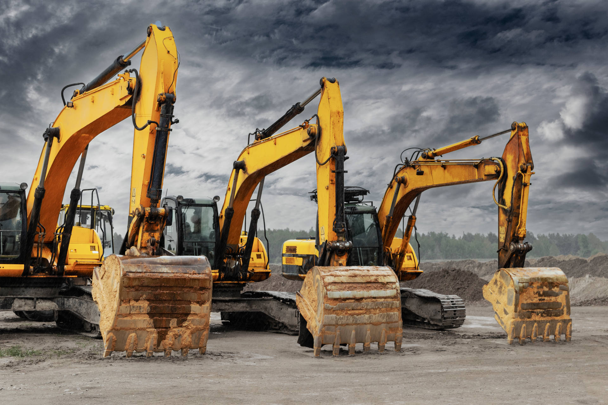
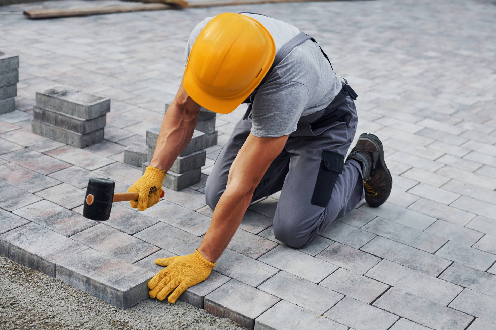
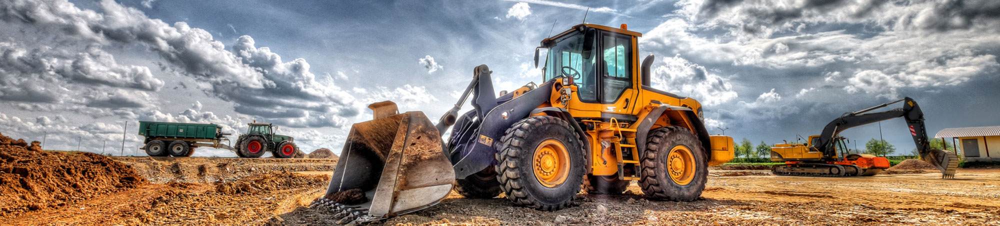

Chodnik w Niepołomicach
Prace przy drodze krajowej.

TEAM SOUTH / NIEDŹWIEDŹ
Od robót ziemnych po gotową przestrzeń.
Budujemy infrastrukturę, która służy ludziom.
01 / TO, CZYM SIĘ ZAJMUJEMY
Łączymy prace ziemne, drogowe i zagospodarowanie terenu. Dla inwestorów prywatnych, publicznych i generalnych wykonawców.
Wykopy, niwelacja i przygotowanie terenu pod inwestycję.
↗02Podjazdy, chodniki i nawierzchnie z kostki oraz płyt betonowych.
↗03Budowa dróg, chodników i ścieżek rowerowych.
↗04Parki, place zabaw i zagospodarowanie terenów zielonych.
↗02 / DOŚWIADCZENIE W TERENIE
Wybrane prace wymienione na obecnej stronie TEAM SOUTH. Szczegóły i zdjęcia konkretnych realizacji uzupełnimy z firmą.

BRUKARSTWO / ZDJĘCIE POGLĄDOWE ZE STRONY FIRMYPrace przy drodze krajowej.
Wykonanie nawierzchni z kostki brukowej.
Pomieszczenia socjalne i zagospodarowanie otoczenia.
Realizacja we współpracy z firmą Francuz.

03 / WŁASNE ZAPLECZE
Własny park maszynowy pozwala TEAM SOUTH realizować kolejne etapy inwestycji: od przygotowania gruntu po wykonanie nawierzchni.
04 / DOBRA WSPÓŁPRACA ZACZYNA SIĘ OD ROZMOWY
Podaj lokalizację, zakres prac i planowany termin.
Omówimy dokumentację, warunki terenowe i organizację prac.
Zakres i warunki wymagają indywidualnego uzgodnienia.
05 / KONTAKT
Porozmawiajmy o zakresie prac i możliwościach współpracy.
797 559 814 ↗biuro@teamsouth.pl ↗